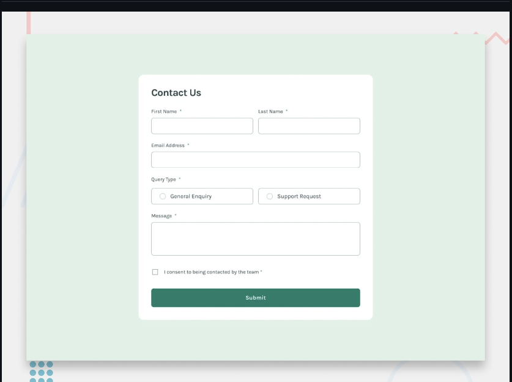
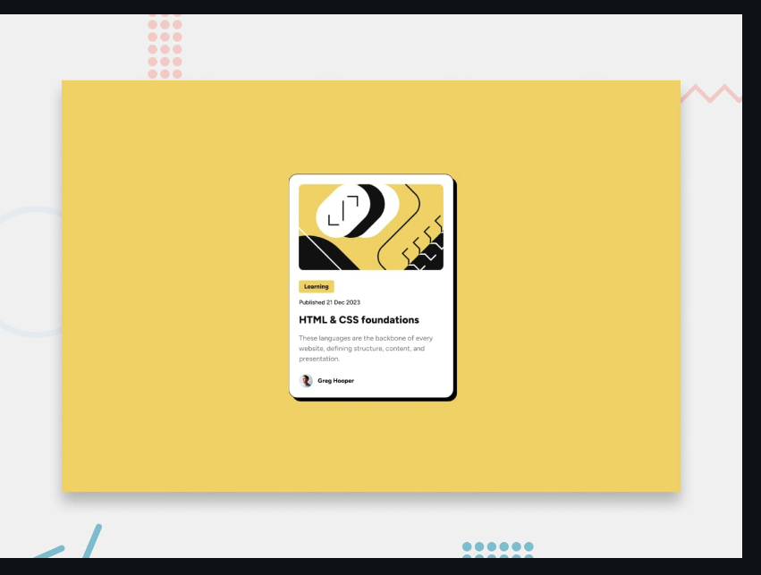
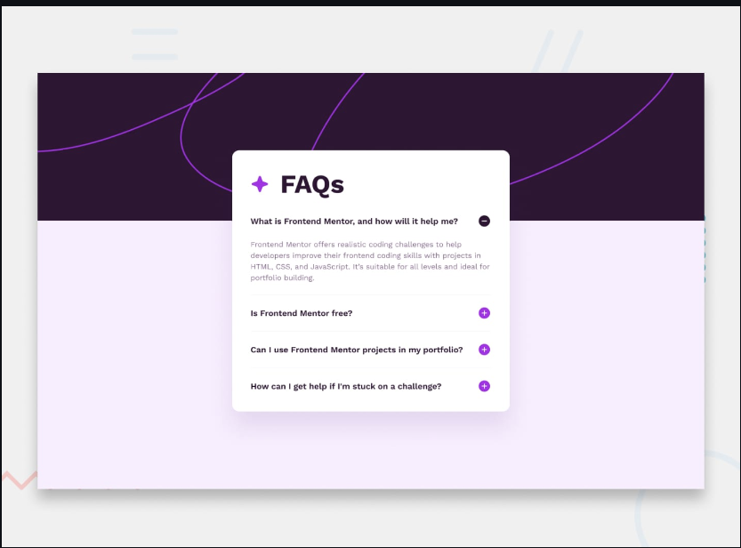

Peter Mburu
Front-End Developer
Im Passionate front-end developer dedicated to crafting intuitive and visually engaging user interfaces. I specialize in turning complex ideas into responsive, accessible, and performant websites and web applications. With a strong foundation in HTML, CSS, and JavaScript, I focus on building dynamic, interactive user experiences that work seamlessly across devices. I'm always exploring new technologies and frameworks like React, Vue.js, and Tailwind CSS to push the boundaries of front-end development.
PROJECTS

Todo App
To-Do App is the ultimate personal task manager designed to help you stay organized and productive. Whether you're planning your day, managing projects, or setting long-term goals, this app has got you covered.
Contact Form
The Contact Form is an essential feature for any project, offering users a direct and convenient way to get in touch with you. Whether it's for inquiries, support requests, feedback, or collaborations, the Contact Form ensures seamless communication between you and your audience.
Blog preview card
Blog Preview Cards are a great way to give users an idea of what they can expect from your blog before they click through to your full article. They're created using custom code and can be modified to fit your brand or style guidelines
FAQ Accordion
FAQ Accordion Onion is an easy-to-use, responsive and flexible accordion plugin for WordPress. It allows you to create complex and customizable accordions with a single click or using a drag-and-drop interface. The plugin includes many features such as drag-and-drop accordion management, custom styling options, responsive design, and automatic caching for improved performance.